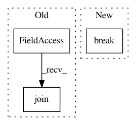

eaf421206d42537f956f46ba2945335d060e21ea,tools/nni_gpu_tool/gpu_metrics_collector.py,,main,#Any#,43
Before Change
exit(2)
with open(os.path.join(metrics_output_dir, "gpu_metrics"), "w") as outputFile:
pass
os.chmod(os.path.join(metrics_output_dir, "gpu_metrics"), 0o777)
cmd = "nvidia-smi -q -x"
while(True):
try:
After Change
except Exception:
traceback.print_exc()
gen_empty_gpu_metric(metrics_output_dir)
break
parse_nvidia_smi_result(smi_output, metrics_output_dir)
// TODO: change to sleep time configurable via arguments
time.sleep(5)
In pattern: SUPERPATTERN
Frequency: 3
Non-data size: 3
Instances
Project Name: microsoft/nni
Commit Name: eaf421206d42537f956f46ba2945335d060e21ea
Time: 2019-08-11
Author: suiguoxin@gmail.com
File Name: tools/nni_gpu_tool/gpu_metrics_collector.py
Class Name:
Method Name: main
Project Name: microsoft/nni
Commit Name: 19173aa4370e36cba96ee7049eaaa0dceda5007c
Time: 2019-08-14
Author: suiguoxin@gmail.com
File Name: tools/nni_gpu_tool/gpu_metrics_collector.py
Class Name:
Method Name: main
Project Name: tensorlayer/tensorlayer
Commit Name: f2073333b710a340403843763ba60eb1e6699916
Time: 2019-04-11
Author: rundi_wu@pku.edu.cn
File Name: examples/data_process/tutorial_tfrecord2.py
Class Name:
Method Name: